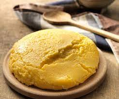

Polenta

Description
Polenta is a dish of boiled cornmeal that was historically made from other grains. It may be served as a hot porridge, or it may be allowed to cool and solidify into a loaf that can be baked, fried, or grilled.[wikipedia].
This pizza recipe presented here takes around 15 min to prepare and 35 min to cook. So, you will need almost 1 hour to finish the recipe. This dish serves 4 people.
Ingredients
You can find the necessary ingridients next:
- 4 cups water
- 1 teaspoon fine salt
- 1 cup polenta
- 3 tablespoons butter, divided
- ½ cup freshly grated Parmigiano-Reggiano cheese, plus more for garnish
Steps
You can find the lasagna recipe steps next:
- Bring water and salt to a boil in a large saucepan; pour polenta slowly into boiling water, whisking constantly until all polenta is stirred in and there are no lumps.
- Reduce heat to low and simmer, whisking often, until polenta starts to thicken, about 5 minutes. Polenta mixture should still be slightly loose. Cover and cook for 30 minutes, whisking every 5 to 6 minutes. When polenta is too thick to whisk, stir with a wooden spoon. Polenta is done when texture is creamy and the individual grains are tender.
- Turn off heat and gently stir 2 tablespoons butter into polenta until butter partially melts; mix 1/2 cup Parmigiano-Reggiano cheese into polenta until cheese has melted. Cover and let stand 5 minutes to thicken; stir and taste for salt before transferring to a serving bowl. Top polenta with remaining 1 tablespoon butter and about 1 tablespoon freshly grated Parmigiano-Reggiano cheese for garnish.
The recipe was copied from this page.
Main menu
Back to the top